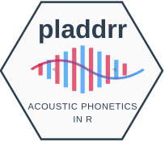

Performance Inventory (pladdrr)
Source:vignettes/agents/performance-inventory.Rmd
performance-inventory.RmdGenerated: 2026-11-25T18:27:46Z by tools/perf_inventory.sh
Static snapshot of where SIMD and multi-threading exist in the pladdrr tree, plus the wrappers that do not yet have an accompanying SIMD path. Use this to prioritise Phase F work.
SIMD source files
| File | Lines |
|---|---|
src/batch_queries_simd.cpp |
472 |
src/mfcc_simd.cpp |
253 |
src/powercepstrogram_simd.cpp |
389 |
src/preemphasis_simd.cpp |
198 |
src/sound_mixing_simd.cpp |
208 |
src/spectrogram_simd.cpp |
295 |
src/textgrid_simd.cpp |
480 |
Threaded Praat call sites (MelderThread_PARALLELIZE)
| File | Line | Function context |
|---|---|---|
src/praat.github.io/LPC/LPC_and_Formant.cpp |
99 | MelderThread_PARALLELIZE (numberOfFrames, thresholdNumberOfFramesPerThread) |
src/praat.github.io/LPC/LPC_and_Formant.cpp |
216 | MelderThread_PARALLELIZE (my nx, thresholdNumberOfFramesPerThread) |
src/praat.github.io/LPC/LPC_and_LineSpectralFrequencies.cpp |
130 | MelderThread_PARALLELIZE (numberOfFrames, thresholdNumberOfFramesPerThread) |
src/praat.github.io/LPC/LPC_and_LineSpectralFrequencies.cpp |
211 | MelderThread_PARALLELIZE (numberOfFrames, thresholdNumberOfFramesPerThread) |
src/praat.github.io/LPC/Sound_to_Formant_mt.cpp |
115 | MelderThread_PARALLELIZE (outputFormant -> nx, thresholdNumberOfFramesPerThread |
src/praat.github.io/LPC/Sound_to_Formant_mt.cpp |
162 | MelderThread_PARALLELIZE (outputFormant -> nx, thresholdNumberOfFramesPerThread |
src/praat.github.io/LPC/Sound_to_PowerCepstrogram.cpp |
73 | MelderThread_PARALLELIZE (numberOfFrames, thresholdNumberOfFramesPerThread) |
src/praat.github.io/LPC/Sound_and_LPC.cpp |
119 | MelderThread_PARALLELIZE (outputLPC -> nx, thresholdNumberOfFramesPerThread) |
src/praat.github.io/LPC/Sound_and_LPC.cpp |
233 | MelderThread_PARALLELIZE (outputLPC -> nx, thresholdNumberOfFramesPerThread) |
src/praat.github.io/LPC/Sound_and_LPC.cpp |
346 | MelderThread_PARALLELIZE (outputLPC -> nx, thresholdNumberOfFramesPerThread) |
src/praat.github.io/LPC/Sound_and_LPC.cpp |
520 | MelderThread_PARALLELIZE (outputLPC -> nx, thresholdNumberOfFramesPerThread) |
src/praat.github.io/LPC/Sound_and_LPC.cpp |
737 | MelderThread_PARALLELIZE (outputLPC -> nx, thresholdNumberOfFramesPerThread) |
src/praat.github.io/fon/Sound_to_Pitch.cpp |
477 | MelderThread_PARALLELIZE (numberOfFrames, parallelization_threshold) |
src/praat.github.io/fon/Sound_and_Spectrogram.cpp |
145 | MelderThread_PARALLELIZE (numberOfTimes, 15) |
src/praat.github.io/fon/Sound_to_Formant.cpp |
370 | MelderThread_PARALLELIZE (numberOfFrames, PLADDRR_FORMANT_FRAMES_PER_THREAD) |
src/praat.github.io/fon/Sound.cpp |
454 | MelderThread_PARALLELIZE (numberOfSamples, 2000) |
src/praat.github.io/fon/Sound_to_Harmonicity_GNE.cpp |
103 | MelderThread_PARALLELIZE (nenvelopes, 4) |
src/praat.github.io/fon/Sound_to_Harmonicity_GNE.cpp |
135 | MelderThread_PARALLELIZE (npairs, 5) |
src/praat.github.io/dwtools/SampledIntoSampled.cpp |
30 | MelderThread_PARALLELIZE (numberOfFrames, thresholdNumberOfFramesPerThread) |
src/praat.github.io/melder/MelderThread.h |
172 | #define MelderThread_PARALLELIZE(numberOfElements, thresholdNumberOfElementsPerT |
src/praat.github.io/melder/MelderThread.h |
216 | MelderThread_PARALLELIZE (numberOfFrames, 5, false) |
src/praat.github.io/melder/MelderThread.h |
309 | MelderThread_PARALLELIZE (thy nx, 5, false) |
Wrappers without a matching *_simd.cpp
A wrapper is considered SIMD-covered if its stem matches an existing
src/<stem>_simd.cpp or
src/<stem>_simd_bridge.cpp. Misses below are
candidates for Phase F SIMD work (verify per-frame independence in the
Praat source before adding a SIMD path — v4.8.29 revert is the
cautionary tale).
| Wrapper | Has SIMD? |
|---|---|
src/amplitudetier_wrappers.cpp |
no |
src/cochleagram_wrappers.cpp |
no |
src/durationtier_wrappers.cpp |
no |
src/electroglottogram_wrappers.cpp |
no |
src/excitation_wrappers.cpp |
no |
src/formant_wrappers.cpp |
no |
src/formantgrid_wrappers.cpp |
no |
src/formanttier_wrappers.cpp |
no |
src/intensitytier_wrappers.cpp |
no |
src/interpreter_wrappers.cpp |
no |
src/longsound_wrappers.cpp |
no |
src/lpc_wrappers.cpp |
no |
src/ltas_wrappers.cpp |
no |
src/manipulation_wrappers.cpp |
no |
src/matrix_wrappers.cpp |
no |
src/pitchtier_wrappers.cpp |
no |
src/pointprocess_wrappers.cpp |
no |
src/powercepstrum_wrappers.cpp |
no |
src/sound_wrappers.cpp |
no |
src/spectrogram_wrappers.cpp |
yes |
src/spectrum_wrappers.cpp |
no |
src/table_wrappers.cpp |
no |
src/textgrid_wrappers.cpp |
yes |
src/vocaltract_wrappers.cpp |
no |
Threaded modules per CLAUDE.md
-
Sound_to_PowerCepstrogram—MelderThread_PARALLELIZE, threshold=250 frames -
Sound_to_Formant—MelderThread_PARALLELIZE, threshold=40 frames -
PowerCepstrogram_to_Matrix_CPP—SampledIntoSampled_mt -
PowerCepstrogram_smooth_fast— parallelisedSampled_getMean -
Sound_to_Harmonicity_GNE(v4.8.30) — Loops B and C parallelised -
Sound_to_Pitch— per-frameMelderThread_PARALLELIZE(upstream); pladdrr SIMD pitch hooks removed in the 2026-10 audit -
Sound_resample(2026-10) — sinc interpolation per channel, threshold=2000 samples